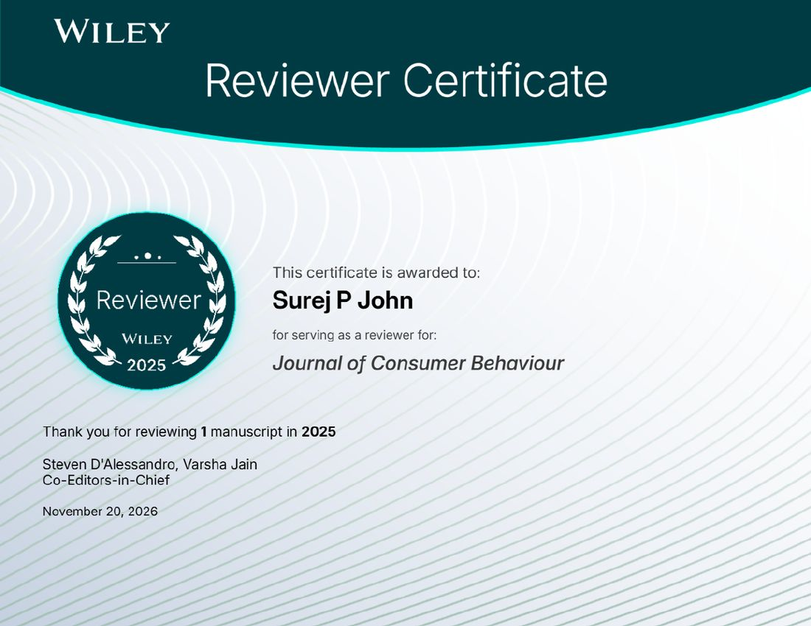
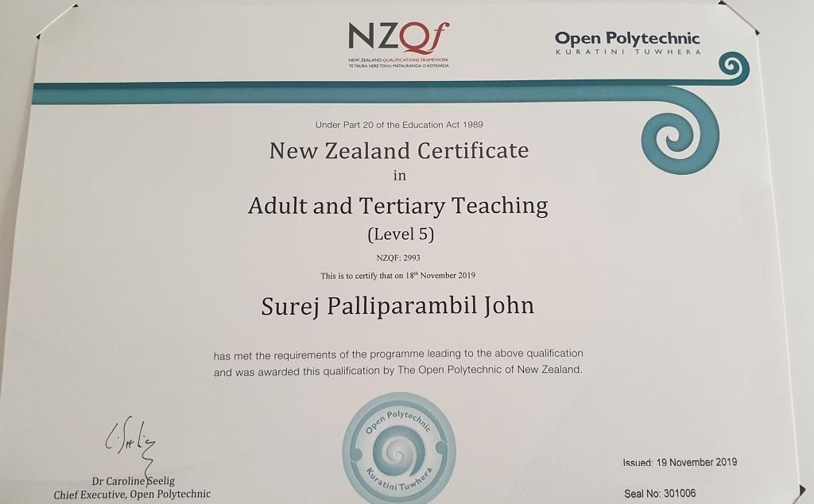
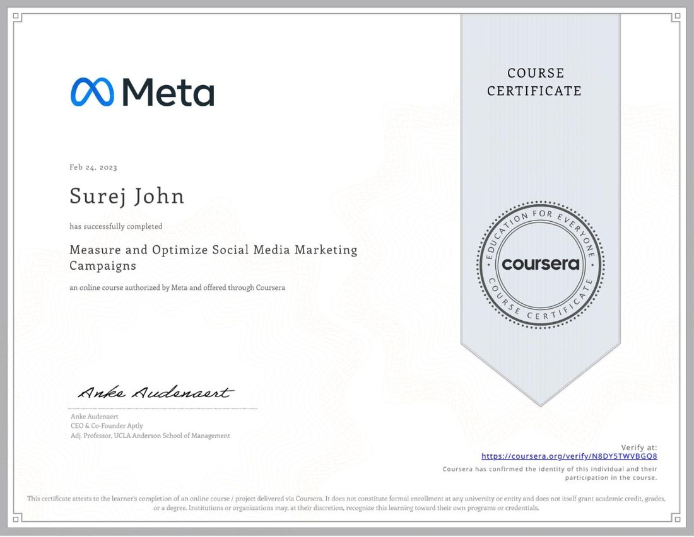
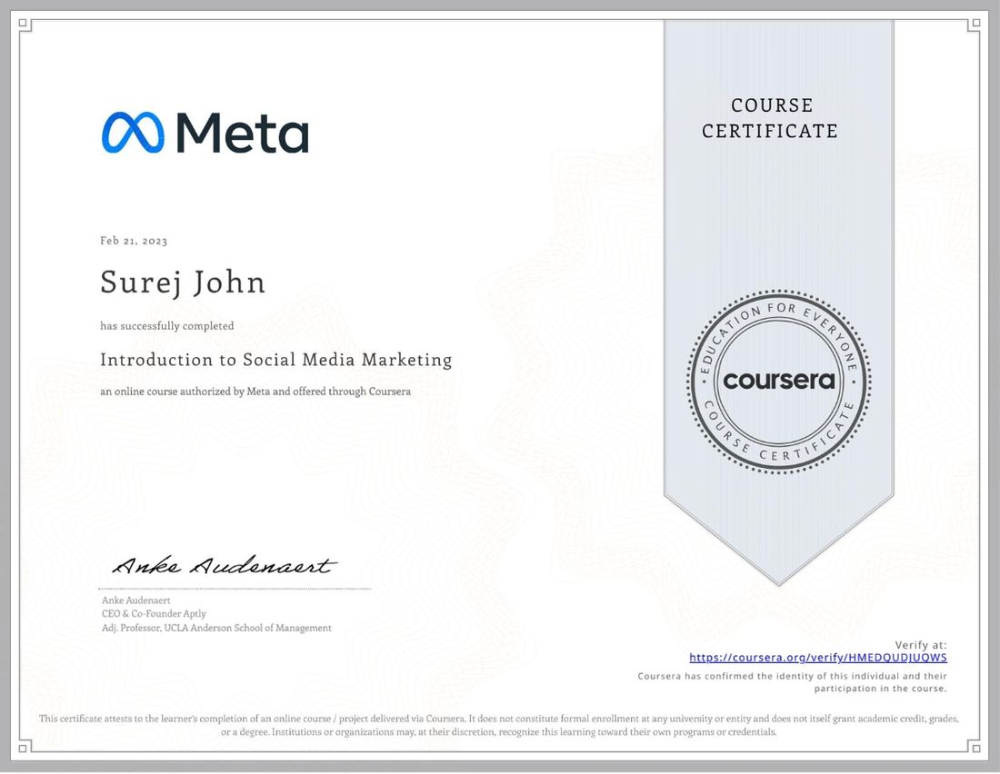
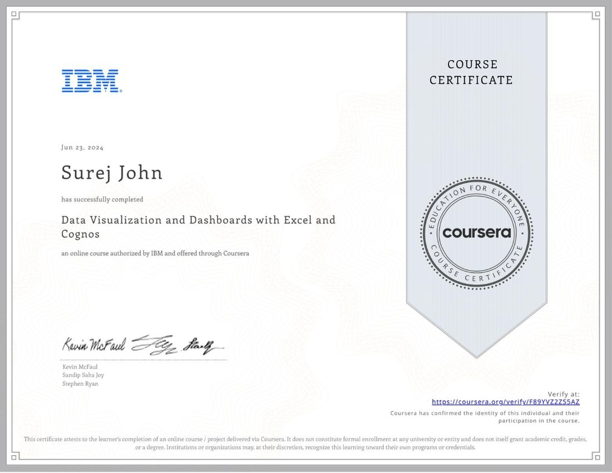

Awards & certifications
Recognition for my research and teaching, my formal teaching qualification, and the professional certificates I have completed to keep my digital marketing and data skills current.
At a glance
2 recent recognitions · NZ Certificate in Adult and Tertiary Teaching (Level 5) · 5 professional certificates from Meta and IBM
Recognition

Wiley Reviewer Certificate 2025
Awarded by Wiley for serving as a reviewer for the Journal of Consumer Behaviour, signed by co-editors-in-chief Steven D’Alessandro and Varsha Jain.
Teaching qualification

New Zealand Certificate in Adult and Tertiary Teaching (Level 5)
Awarded by the Open Polytechnic of New Zealand (Kuratini Tuwhera), 18 November 2019. A New Zealand Qualifications Framework qualification (NZQF 2993) in adult and tertiary teaching practice.
Professional certificates
Online courses authorised by Meta and IBM and offered through Coursera. Each can be checked on Coursera.

Measure and Optimize Social Media Marketing Campaigns
Meta · offered through Coursera · 24 February 2023

Introduction to Social Media Marketing
Meta · offered through Coursera · 21 February 2023

Python for Data Science & AI: Hands-On Development
IBM · offered through Coursera · 29 June 2024

Data Visualization and Dashboards with Excel and Cognos
IBM · offered through Coursera · 23 June 2024
Looking for a speaker or reviewer?
I welcome invitations for guest lectures, keynotes and journal reviewing.